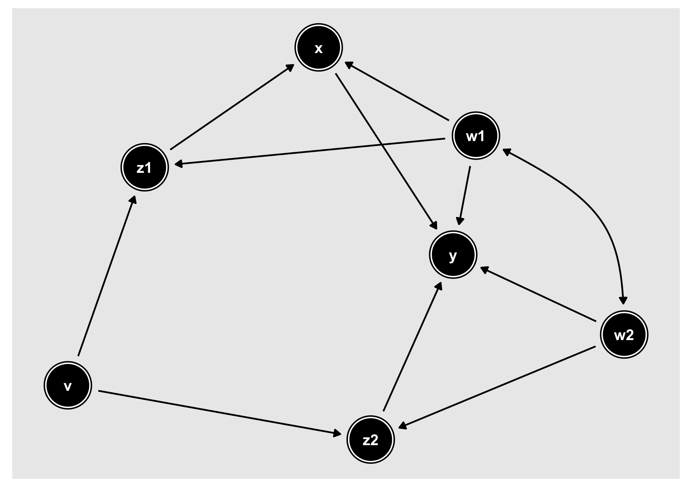
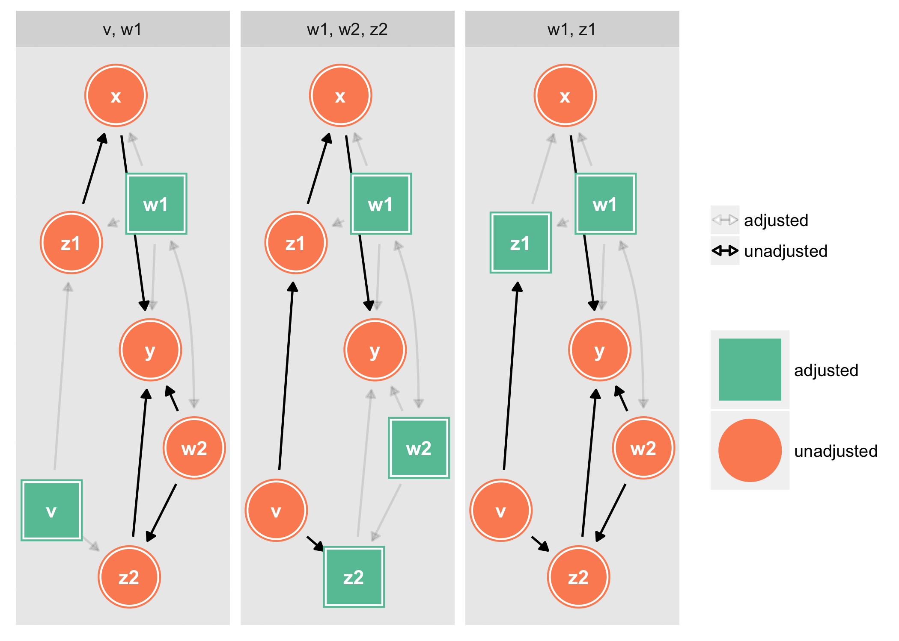
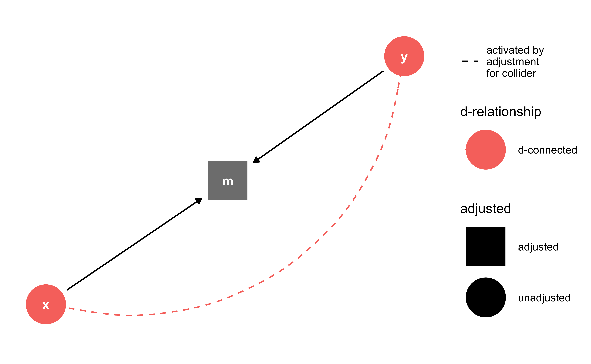
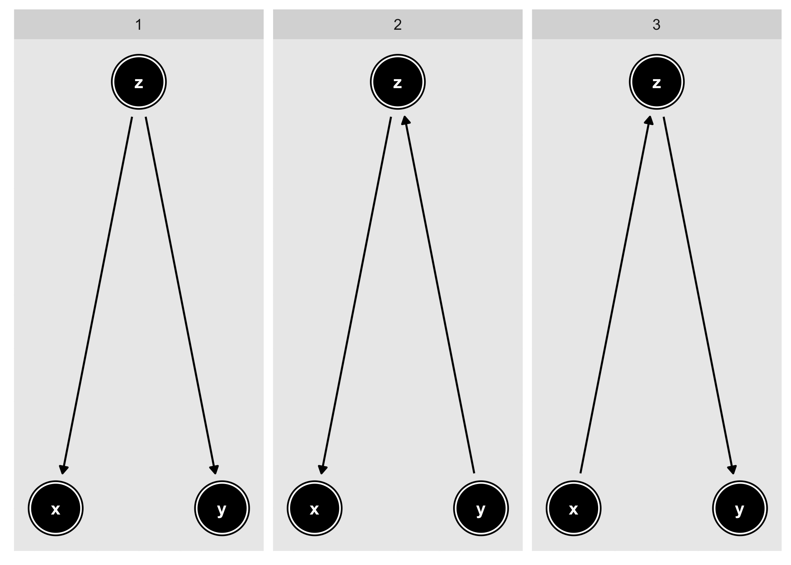

ggdag: An R Package for visualizing and analyzing directed acyclic graphs
Tidy, analyze, and plot directed acyclic graphs (DAGs). ggdag uses the powerful dagitty package to create and analyze structural causal models and plot them using ggplot2 and ggraph in a consistent and easy manner.
Installation
You can install ggdag from GitHub with:
Example
ggdag makes it easy to use dagitty in the context of the tidyverse. You can directly tidy dagitty objects or use convenience functions to create DAGs using a more R-like syntax:
library(ggdag)
# example from the dagitty package
dag <- dagitty::dagitty( "dag {
y <- x <- z1 <- v -> z2 -> y
z1 <- w1 <-> w2 -> z2
x <- w1 -> y
x <- w2 -> y
x [exposure]
y [outcome]
}")
tidy_dag <- tidy_dagitty(dag)
tidy_dag
#> # A tibble: 13 x 8
#> name x y direction to xend yend circular
#> <chr> <dbl> <dbl> <fct> <chr> <dbl> <dbl> <lgl>
#> 1 v 11.8 8.03 -> z1 10.4 7.77 FALSE
#> 2 v 11.8 8.03 -> z2 12.1 6.66 FALSE
#> 3 w1 10.2 6.85 -> x 9.95 6.28 FALSE
#> 4 w1 10.2 6.85 -> y 11.1 6.39 FALSE
#> 5 w1 10.2 6.85 -> z1 10.4 7.77 FALSE
#> 6 w1 10.2 6.85 <-> w2 10.9 5.75 FALSE
#> 7 w2 10.9 5.75 -> x 9.95 6.28 FALSE
#> 8 w2 10.9 5.75 -> y 11.1 6.39 FALSE
#> 9 w2 10.9 5.75 -> z2 12.1 6.66 FALSE
#> 10 x 9.95 6.28 -> y 11.1 6.39 FALSE
#> 11 z1 10.4 7.77 -> x 9.95 6.28 FALSE
#> 12 z2 12.1 6.66 -> y 11.1 6.39 FALSE
#> 13 y 11.1 6.39 <NA> <NA> NA NA FALSE
# using more R-like syntax to create the same DAG
tidy_ggdag <- dagify(y ~ x + z2 + w2 + w1,
x ~ z1 + w1,
z1 ~ w1 + v,
z2 ~ w2 + v,
w1 ~~ w2, # bidirected path
exposure = "x",
outcome = "y") %>% tidy_dagitty()
tidy_ggdag
#> # A tibble: 12 x 8
#> name x y direction to xend yend circular
#> <chr> <dbl> <dbl> <fct> <chr> <dbl> <dbl> <lgl>
#> 1 v 7.25 17.2 -> z1 7.59 18.5 FALSE
#> 2 v 7.25 17.2 -> z2 8.57 16.8 FALSE
#> 3 w1 9.03 18.7 -> x 8.35 19.3 FALSE
#> 4 w1 9.03 18.7 -> y 8.93 18.0 FALSE
#> 5 w1 9.03 18.7 -> z1 7.59 18.5 FALSE
#> 6 w1 9.03 18.7 <-> w2 9.68 17.5 FALSE
#> 7 w2 9.68 17.5 -> y 8.93 18.0 FALSE
#> 8 w2 9.68 17.5 -> z2 8.57 16.8 FALSE
#> 9 x 8.35 19.3 -> y 8.93 18.0 FALSE
#> 10 z1 7.59 18.5 -> x 8.35 19.3 FALSE
#> 11 z2 8.57 16.8 -> y 8.93 18.0 FALSE
#> 12 y 8.93 18.0 <NA> <NA> NA NA FALSEggdag also provides functionality for analyzing DAGs and plotting them in ggplot2:


As well as geoms and other functions for plotting them directly in ggplot2:
dagify(m ~ x + y) %>%
tidy_dagitty() %>%
node_dconnected("x", "y", controlling_for = "m") %>%
ggplot(aes(x = x, y = y, xend = xend, yend = yend, shape = adjusted, col = d_relationship)) +
geom_dag_edges(aes(end_cap = ggraph::circle(10, "mm"))) +
geom_dag_collider_edges() +
geom_dag_node() +
geom_dag_text(col = "white") +
theme_dag() +
scale_dag(expand_y = expand_scale(c(0.2, 0.2)))
And common structures of bias:
